从0开始的计算机设计实验
计算机设计实践课程群中有如下文件，大家比较头疼的点应该在于不知道怎么下手，笔者将对这方面做详细介绍，我们慢慢来，如果有耐心看完应该会明白了
以上是课程群中的所有文件，记得将CODExp.rar解压缩，里面有
demo和testcode两个部分，下面首先介绍
⭐⭐⭐文件结构介绍
我们解压缩 CODExp.rar 并进入，会发现有 testcode 和 demo 两个部分,文件结构和各个文件在做什么如下：
./
├── demo/ # CPU 实现（仿真 + FPGA）
│ ├── plcpu_sim/ # 流水线 CPU 仿真
│ ├── sccpu_sim/ # 单周期 CPU 仿真
│ └── sccpu_fpga/ # FPGA 综合版本，考录到板子上会用
└── testcode/ # 汇编测试程序
├── demo/ # 演示程序
└── task/ # 任务测试
让我们搞清楚实验整体流程
本课程实验本分为了 单周期CPU 和 流水线CPU 两个部分。每个部分都有自己的 实验内容 和 验收要求。这边笔者会对课程ppt做出解读
单周期CPU
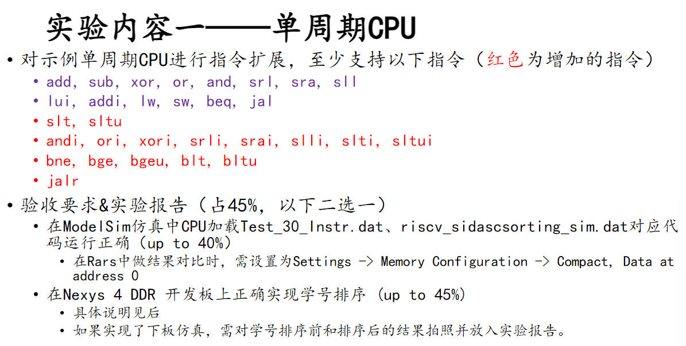
我们先不管实验内容部分（也就是增加指令那里，笔者会在ModelSim部分介绍），先看一下 验收要求&实验报告 部分，这里比较容易让人迷茫：
在ModelSim仿真中CPU加载Test_30_Instr.dat、riscv_sidascsorting_sim.dat对应代码运行正确(up to 40%)
简单来说，这两个文件是验证我们写的对不对的文件。就是：
- 我们写好 CPU 之后（假设现在已经在ModelSim中写好了，先不要在意其形式）
- 在 ModelSim 软件中可以运行控制程序部分，进行仿真
- 从而把这两个 .dat 加载进来
- 然后将我们运行的结果与正确答案做对比，如果达到了40%就算合格
- 而正确答案就来自于
Test_30_Instr.asm、riscv_sidascsorting_sim.asm在 Rars1_6.jar 中运行的结果，也就对应了那一句 在Rars中做结果对比时
而 在Nexys 4 DDR 开发板上正确实现学号排序 则是 Vivado 软件的内容，笔者后续更新
流水线CPU
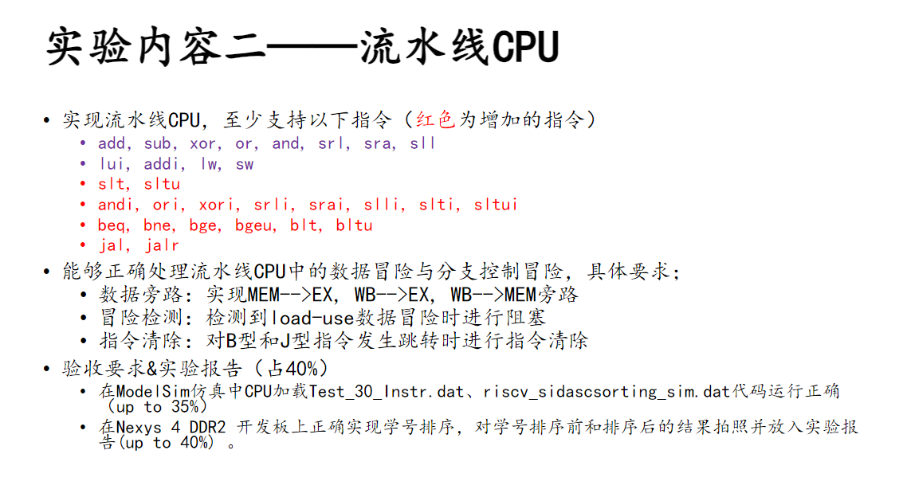
这里就不加赘述了，一样的道理
软件使用
ModelSim
这里建议在 官网下载 下载好之后的界面是这样的：
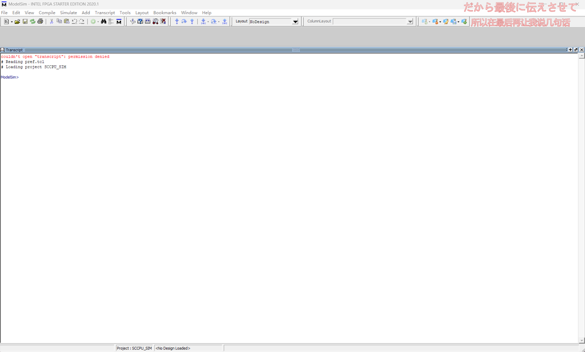
新建项目并打开
什么都不要管，听我的，点击左上角的 File -> New -> Project,会出现一个弹窗
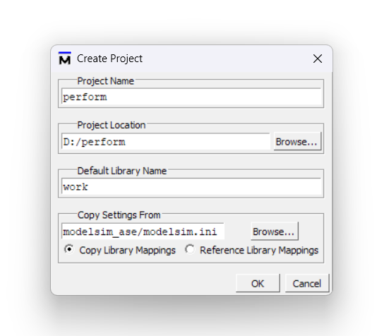
第一行是你的项目名称，第二行是你项目的位置，第三行、第四行不需要管，填写好之后点击 OK,会出现新的弹窗，如下
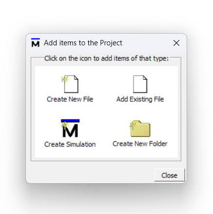
我们点击右上角的 Add Existing File，又会出现一个弹窗
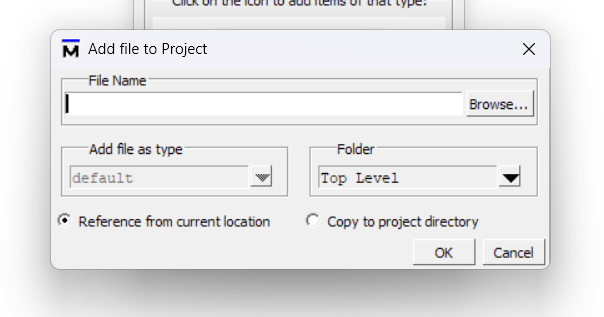
这里有两步要做
**第一步：**点击第一行的 Browse，找到你刚刚解压的 CODExp 文件夹，选择你需要的CPU资源文件（这里用单周期CPU为例，即 CODExp -> demo -> sccpu_sim -> source)，然后全选，点击 打开 ，如下图所示
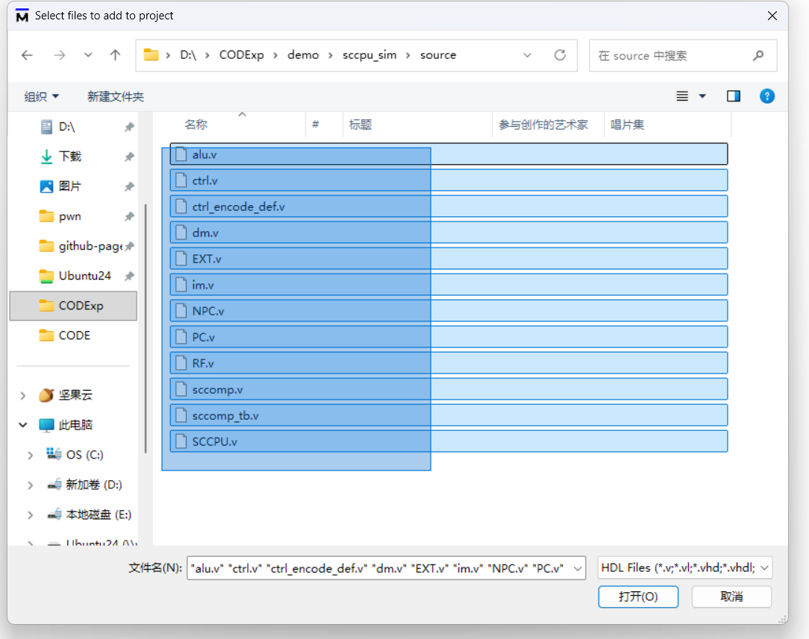
第二步：将下面的选择，从 相对位置 改为 粘贴到项目文件,最终效果应该这样：
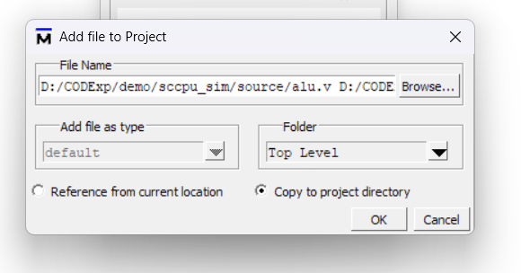
点击OK即可
点击OK后应该是空空的，像下图一样
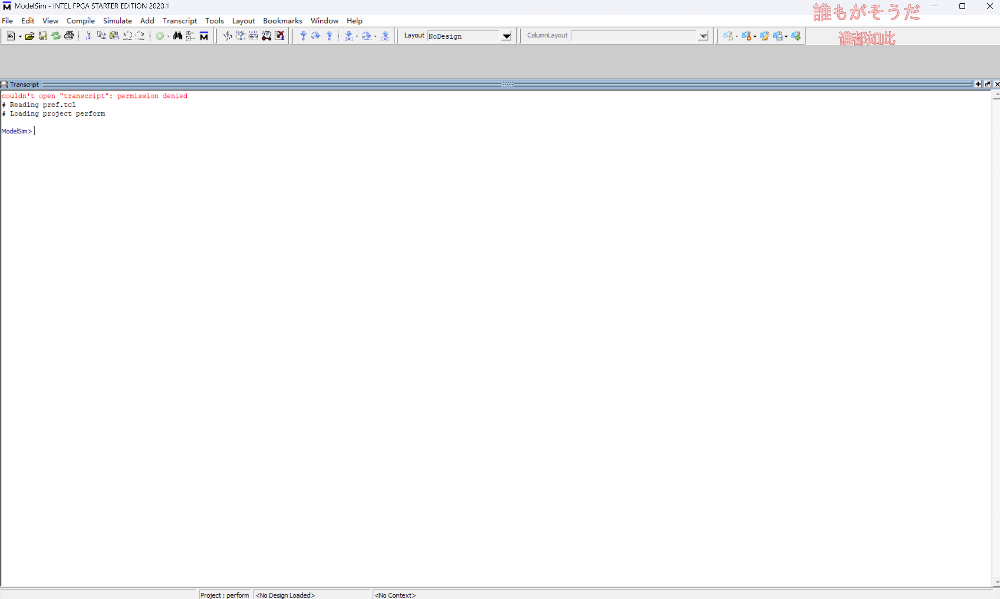
我们依次点击 File->Open 此时应该出现了一个弹窗，按照红框指示，我们找一下 .mpf 文件并打开
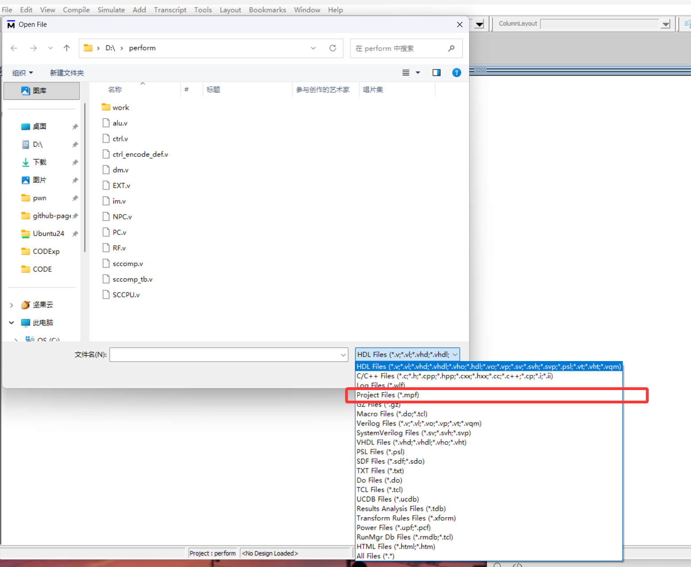
此时界面应该变成了类似下面这样，如果没有的话就把项目删了再来一次/或者说你的命令行界面太高了，可以尝试把transcript部分给拉下来：
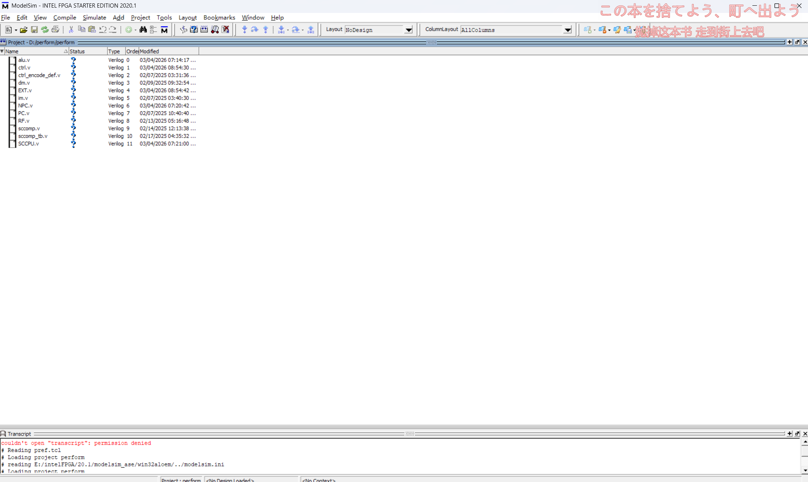
至此，我们完成了新建项目并打开的任务
写代码
我们看到的这些文件都可以通过鼠标双击直接打开，然后就出现了代码界面，如下图：
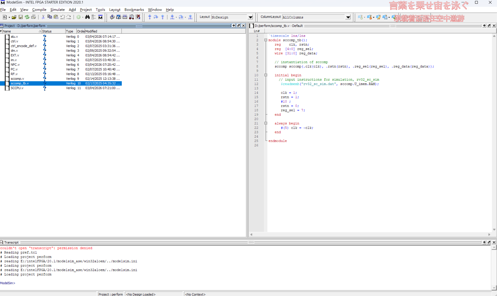
一般来说就可以写代码了，不过有些同学或许默认文件是 Read Only，下面是解决方法。
我们在代码界面 右键，出现的选项框中会有一个 √ Read Only,点一下就可以，如下图所示，关掉就好
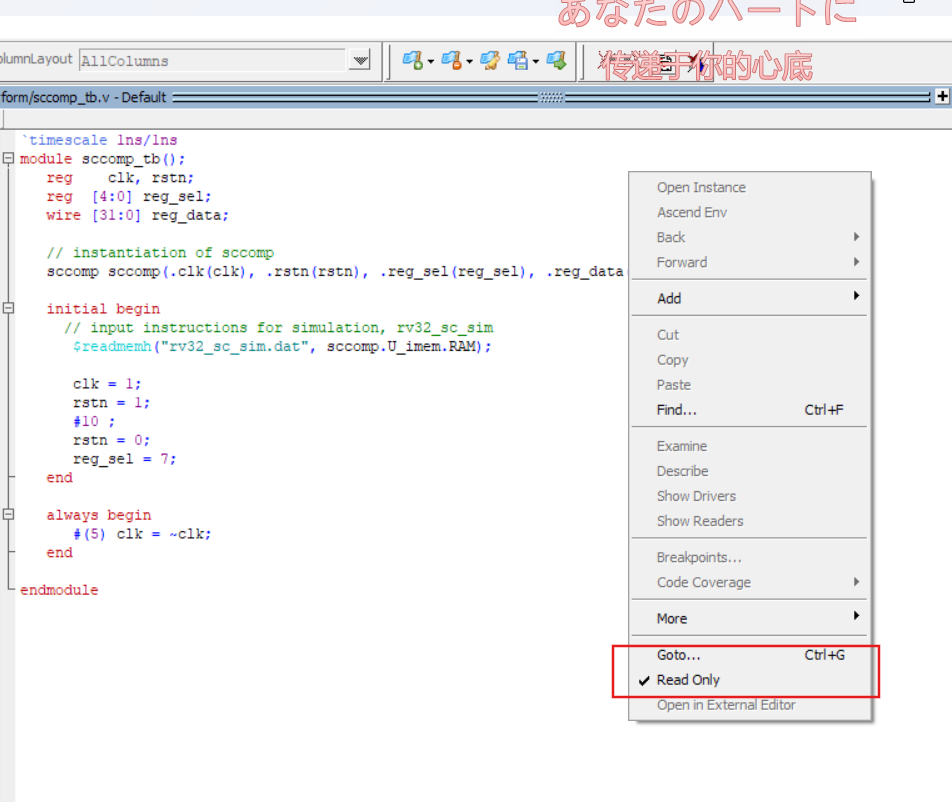
至此，我们就可以自行写代码了，接下来是编译运行
编译运行
我们在左侧的部分 右键,选择 Compile -> Compile All 即可完成编译，如下图
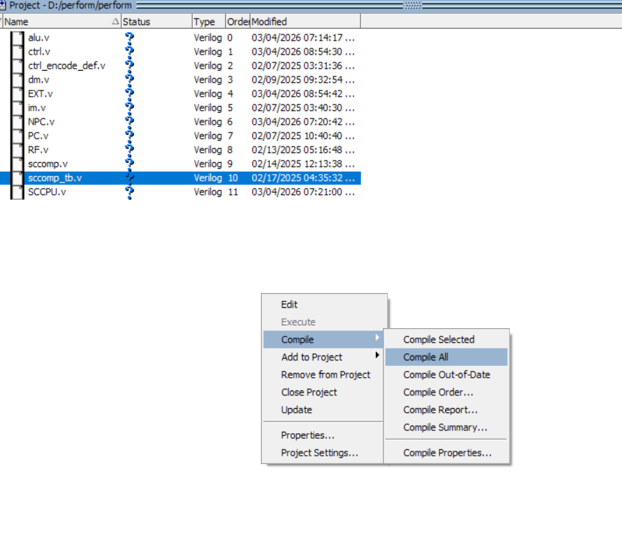
编译完成后的❓会变为 √ ，表示文件已经被编译，于是我们完成了编译的操作
每次修改完代码记得都编译一下，不然运行的时候不保存
在ModelSim中的运行其实应该叫做仿真，详细过程如下：
在窗口的上面一行中（File 那一行），有一个 Simulate 选项，我们依次选择 Simulate->Start Simulate 会出现一个弹窗，我们找一下一个叫做 work 的东西，如下图
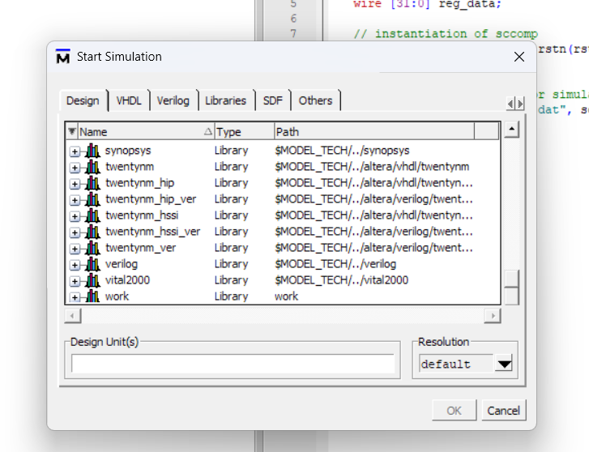
点击 work 左边的 + ，展开就是我们的项目全部文件，在里面找一个有 _tb 后缀的文件，它就是控制文件，如下图
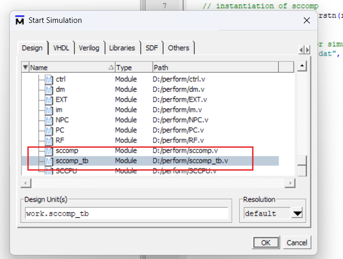
然后我们就得到了仿真界面，如下图所示
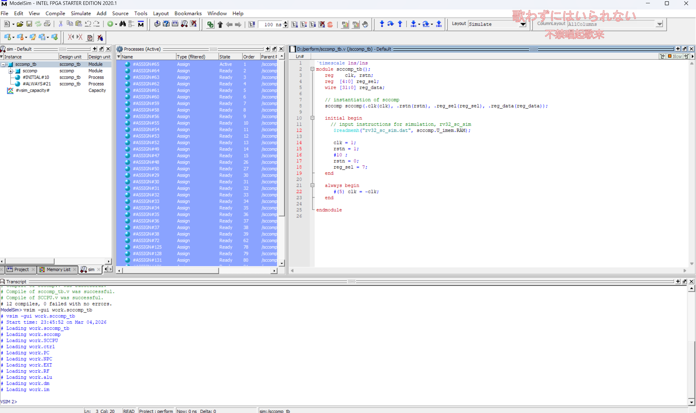
接下来是加载锚点到波形图（笔者的个人说法）。
我们 右键 左侧的那个 sccomp_tb 会有一个 Add Wave，点击它，会在整个窗口的右侧得到波形图，如下图所示
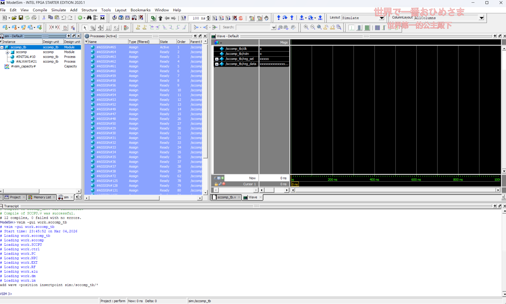
然后就是运行仿真
有两种方法，一个是 命令行：
也就是直接在下面的 VSIM 3> 那里输入 run 2000ns（这里数字自行调整，注意小一些，不然要跑好久），如下图所示
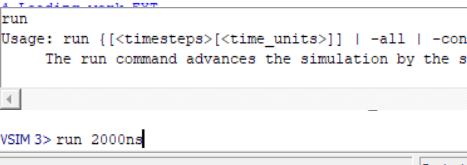
我们就可以得到波形仿真了
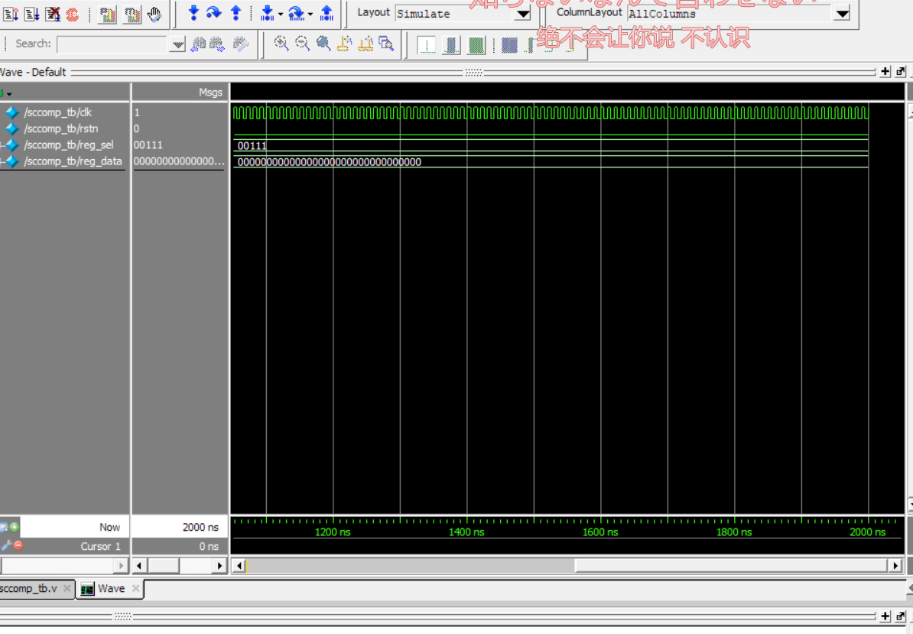
第二种方法就是直接点点点：
我们选择窗口上面的 Simulate->Run->Run 100/Run -All 就可以手动让它运行了，就不截图展示了
注意如果使用了
Run -All或者说在第一种方法里时间选的太长，一直停不下来，我们需要手动stop，位置在红框框起来的地方：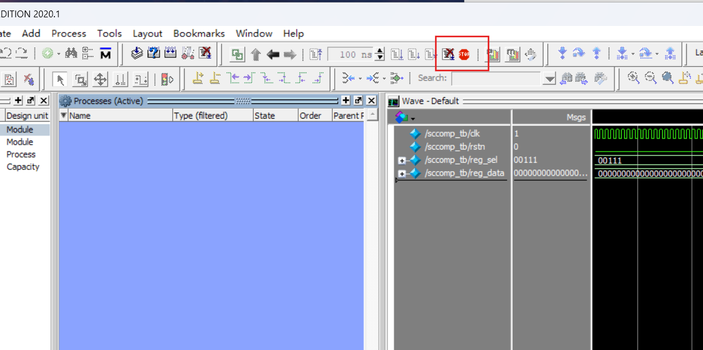
加载.dat验证自己的CPU
.dat 是数据文件，用来给仿真程序读写数据的外部文件，我们这里的是指令文件
我们把 xx.dat 复制到项目文件夹下面就可以，不过需要注意的是，sccomp_tb.v 文件只会加载名称为 rv32_sc_sim.dat 的文件，所以要么我们把复制来的文件改名，要么把代码改改
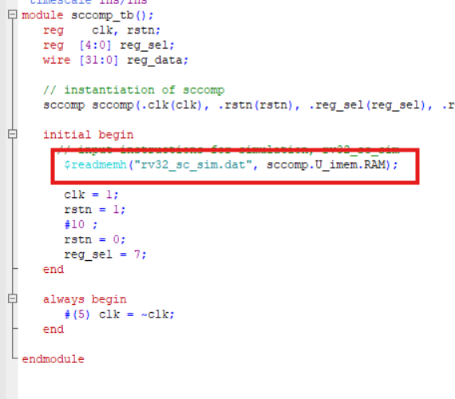
查看结果
笔者不知道老师们打算怎么看结果，反正笔者只会看寄存器：待运行仿真结束后，我们在命令行中输入下面的指令，即可获得结束时的寄存器值
for {set i 0} {$i < 32} {incr i} {
echo [format "x%0d = %s" $i [examine -hex /sccomp_tb/sccomp/U_SCCPU/U_RF/rf($i)]]
}
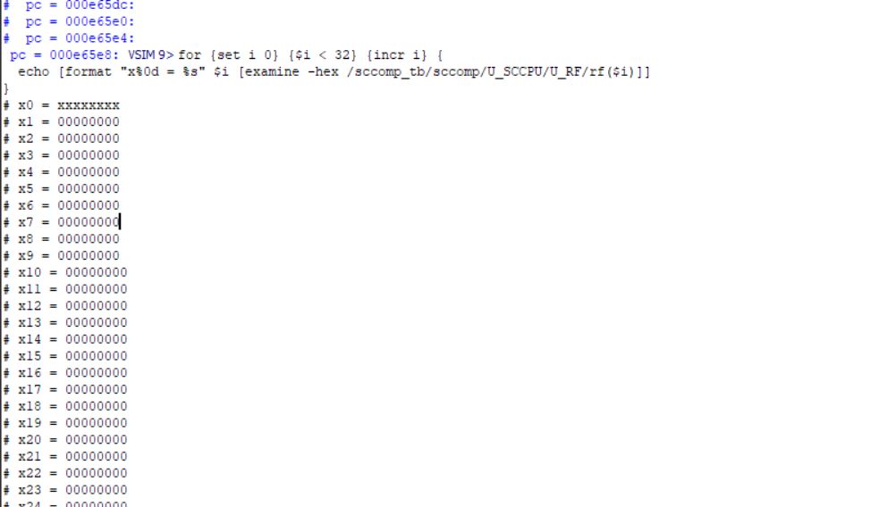
也可以用下面这个指令把寄存器加到波形图里面
for {set i 0} {$i < 32} {incr i} {
add wave -hex /sccomp_tb/sccomp/U_SCCPU/U_RF/rf($i)
}
Debug环节
笔者的室友在运行这个指令的时候出现了如下报错：
for {set i 0} {$i < 32} {incr i} {
echo [format "x%0d = %s" $i [examine -hex /sccomp_tb/sccomp/U_SCCPU/U_RF/rf($i)]]
}
# evaluating expression "rf(0)"
# No object found matching "rf".
# ** Error: (vish-4014) No objects found matching '/sccomp_tb/sccomp/U_SCCPU/U_RF/rf(0)'.
这个是由于仿真优化把内部 memory 隐藏了，按顺序执行下面的指令就可以了
# 先重新启动，保留内部对象可见性
vsim -voptargs=+acc work.sccomp_tb
# 确认路径下有哪些信号
find signals /sccomp_tb/sccomp/U_SCCPU/U_RF/*
# 再读寄存器数组进行测试
examine -hex /sccomp_tb/sccomp/U_SCCPU/U_RF/rf(5)
至此，ModelSim所需要的操作都结束了，接下来我们介绍 Rars.jar
Rars.jar
Rars.jar 用来运行 .asm 文件，也就是用我们电脑上正常的cpu运行这个程序，将最后的结果和我们自己设计的CPU进行对比
这个软件就是我们在群里下载下来的 rars1_6.jar 文件，不过需要Java环境，有些同学的电脑上可能没有，这边也介绍一下
JDK的安装（JAVA环境的安装）
网上不少教程都是直接下载安装，笔者认为这个方法非常的不优雅，这边建议所有同学都使用命令行安装
首先打开powershell或者cmd（这个不会开的上网搜吧），检查一下JDK的有无或者版本
java -version
笔者这里先把java卸载了，显示如下：
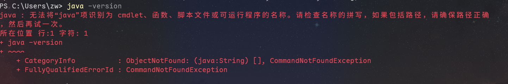
如果有java环境的同学应该显示如下，不过版本可能会不太一样，如果你的版本是17多的话，建议跟随指导顺便更新一下，因为笔者之前17版本的JDK在打开 rars 的时候有些bug，不太清楚什么原因
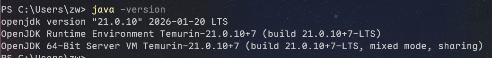
我们运行下面的命令，看看可以安装哪些jdk（本步可忽略）：
winget search OpenJDK
winget search Temurin
结果挺多的，笔者就不截图了，大家自己看看就行
笔者安装的是 Temurin 21，版本相对比较新，也比较稳定，各位看自己需要安装，命令如下
winget install -e --id EclipseAdoptium.Temurin.21.JDK
然后等待即可，什么都不用管了
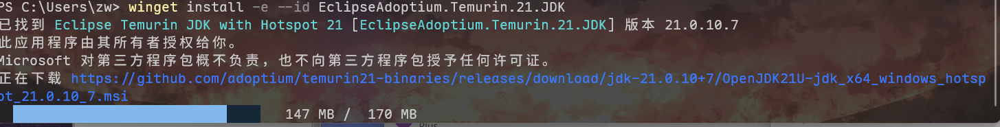
Rars使用
安装好环境之后就可以双击使用 Rars1_6.jar 了，打开后界面长这样
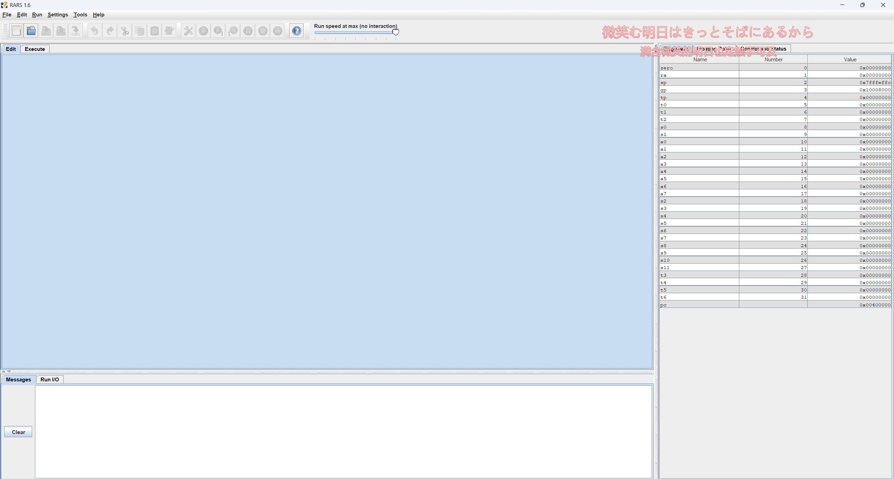
依旧左上角 File->Open 这里找一下CODExp的 task 或者 demo 部分（CODExp->testcode->demo/task)
笔者这里展示下
task的Test_30_Instr.asm，各位自己操作的时候看自己的情况，一定要选择.asm文件
出现这样的界面
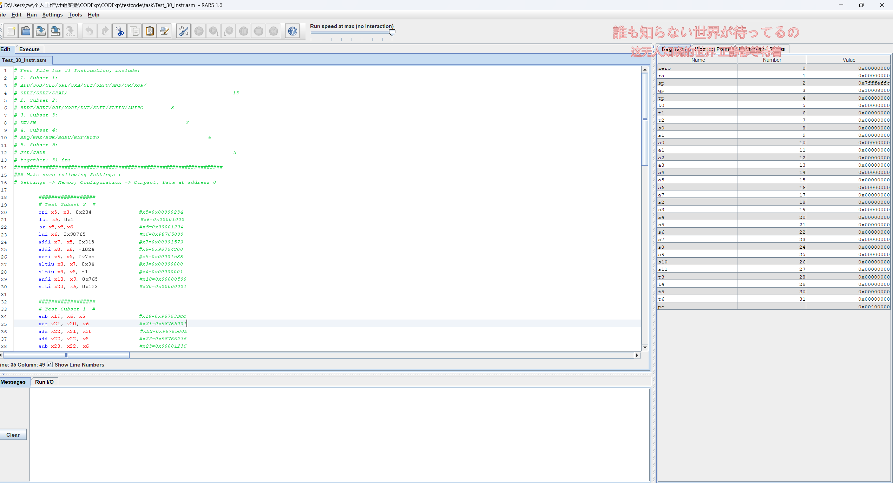
可以看到上面有个 螺丝刀和扳手，点它一下,界面就变了
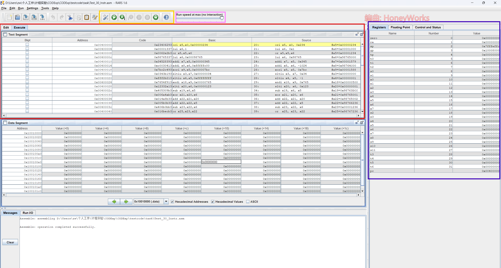
- 红色部分：汇编运行部分
- 紫色部分：寄存器的值和编号的对应，如果和笔者的不一样的话，看一下标签卡选对没有
- 黄色部分：绿的那个就是开始运行，常识之类的不介绍了
- 粉色部分：这个控制速率，个人不建议拉满，最好次高档(30 inst/sec)，方便看清寄存器的变化
我们运行看看
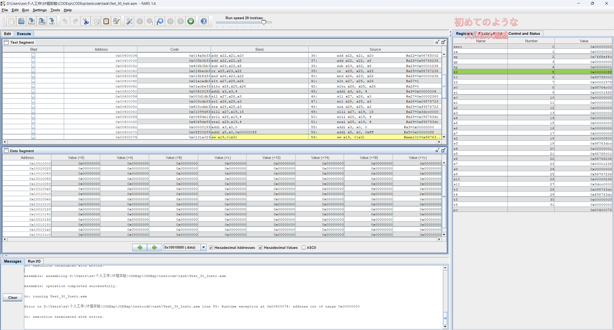
不错，跑起来了。但还有一点需要注意的，我们之前留下的一个引子
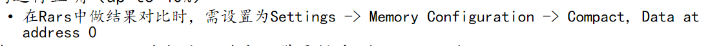
按照要求，我们一步步来
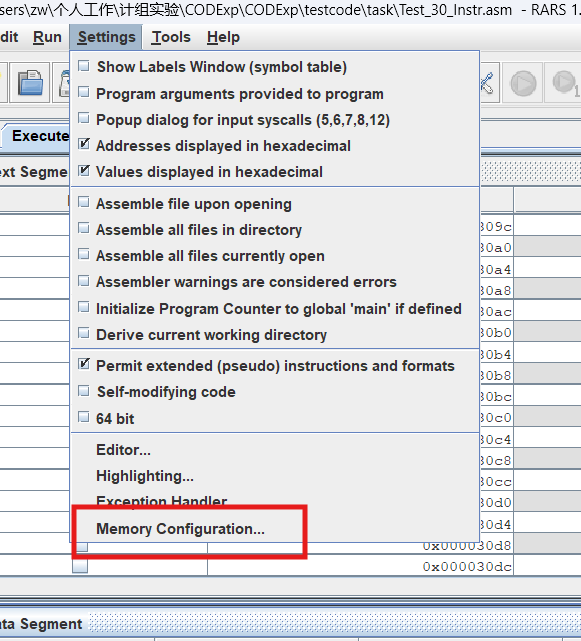
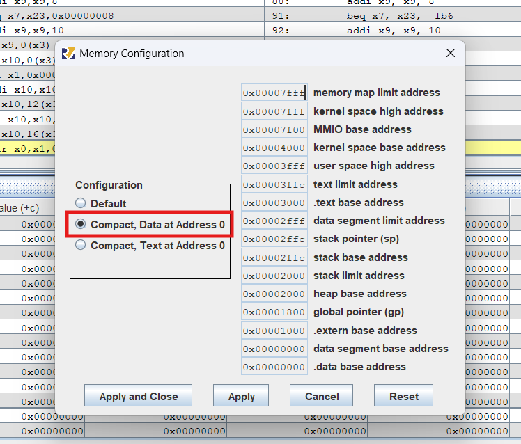
然后 再次运行
会发现数值发生了些许变化，如下：
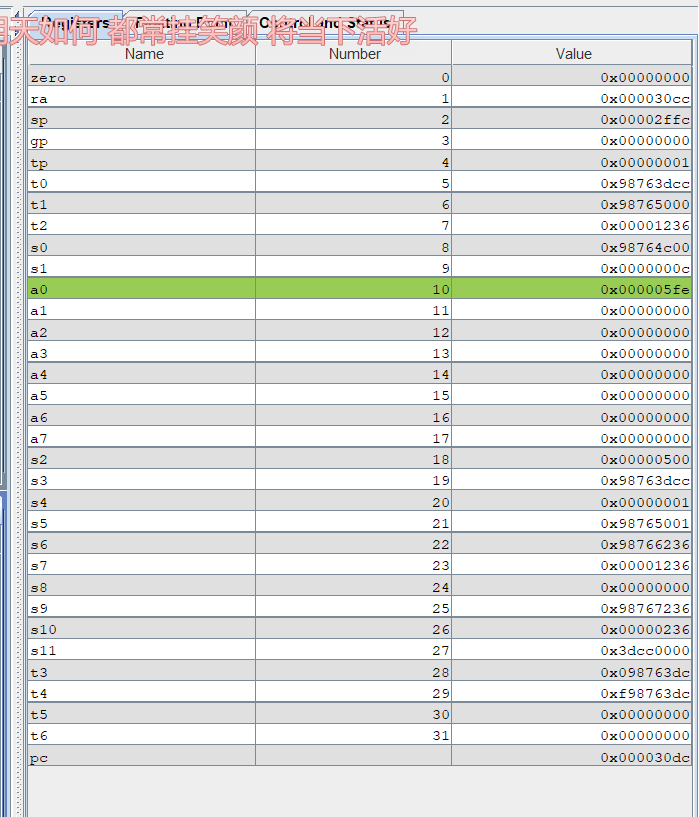
那么我们和自己的对比一下看看？
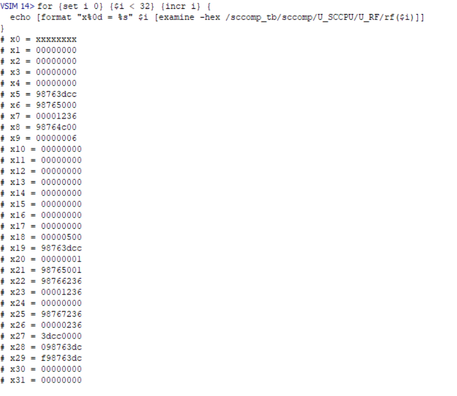
不错，数值都对上了，说明我们的单周期CPU设计完全胜利!教程也先到这里，等笔者鼓捣到流水线和fpga的时候再更新